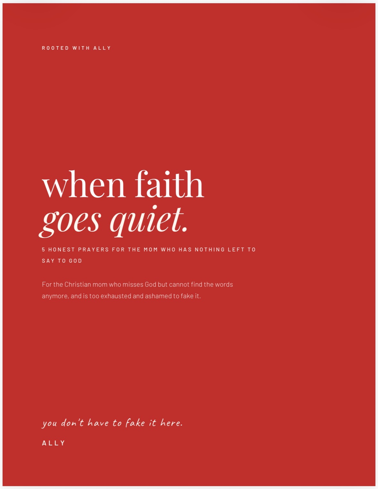
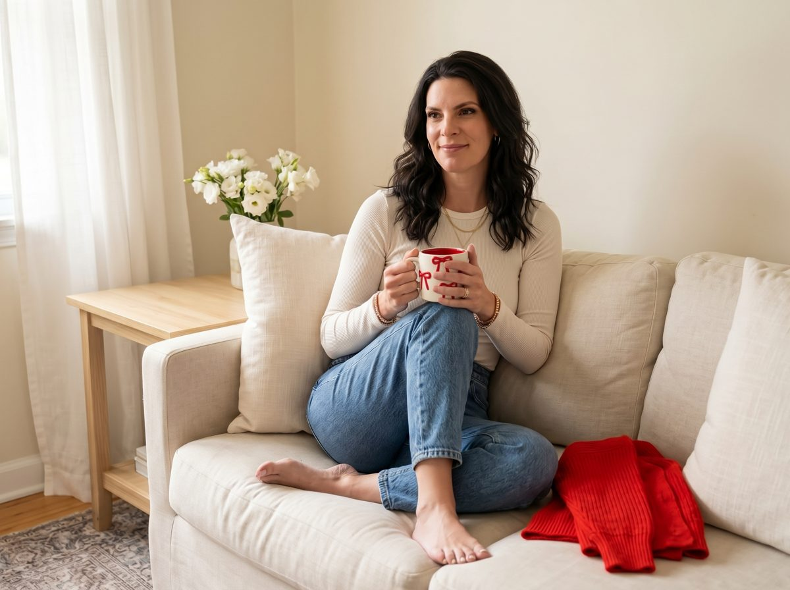
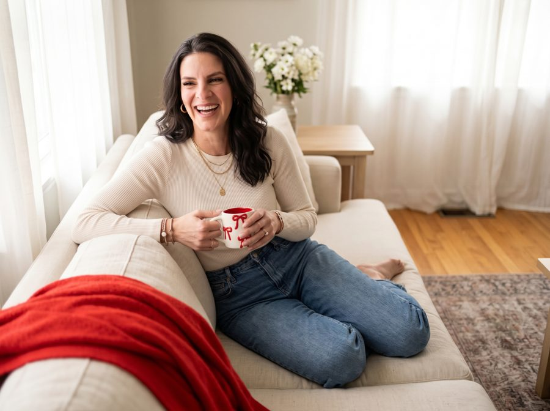

One Place to Start
The Ebook
You love your kids with your whole heart. You also feel like you're disappearing inside the role — and you're terrified to say that part out loud.
I help Christian moms who are parenting without a village find their way back — to God, to themselves, to a daily rhythm — with something honest enough to actually meet you where you are.
Not balance. Not burnout. You finish sentences other people started and realize you don't have an opinion of your own anymore. You've decided you can't say that out loud without sounding like a monster.
Not because you stopped believing. Motherhood swallowed every hour you used to give God, and now you don't even know where to start. The guilt of that distance feels heavier than the exhaustion itself.
You've decided those thoughts make you a bad mom, or an ungrateful Christian. So you bury them, smile at church, and perform being fine — while slowly suffocating inside the performance.
No one texts to ask if you're okay. No one shows up to take the kids for two hours so you can breathe. It's you, maybe a partner who doesn't fully understand, and the weight of all of it with no one to hand any of it to.
You scroll past women who look like they have it together and wonder what's wrong with you. Then you feel guilty for comparing. Then you do it again tomorrow.
The one with a real relationship with God, dreams of her own, a sense of herself outside of everyone's needs. You wonder if she's still in there. She is. She just got covered — and covered is a completely different situation than gone.
If even one of those made you pause and think yes, that's me... you are not broken, and you are not too far gone. You are just a woman who has been carrying this alone for too long. You don't have to anymore.
I know what it feels like to wake up and immediately dread the day before your feet hit the floor.
I know the specific shame of crying during bedtime routines — the one moment that's supposed to be tender — and not being able to explain why to a child who just wants their mom.
I know what it looks like when the arguing doesn't stop, when your marriage starts showing cracks you're terrified are permanent, when you can see your family life fraying at the edges and you don't know how to hold it all together when you can barely hold yourself.
My faith didn't leave dramatically. It just quietly slid to the bottom of the list — buried under responsibilities, appointments, exhaustion, and the weight of keeping everyone else alive. And I let it. Because there was always something more urgent. Until one day I looked up and realized I hadn't actually talked to God in longer than I could remember.
And without Him, my life was heading somewhere I didn't want to go.
That realization didn't fix everything overnight. But it was the moment I stopped pretending the distance wasn't there — and started being honest about it for the first time.
I wrote Still Here because I needed it to exist. Because the silence was doing more damage than the honesty ever could.
No credentials on a wall. No perfectly reconstructed faith. Just a mom who got honest — and believes you deserve to too.

5 honest prayers for the mom who has nothing left to say to God — free, straight to your inbox.
Get the Free Prayers →If something isn't covered here, just reach out — I'm happy to help.
Especially then. This wasn't made for the woman who has it all together. It was made for the one who is tired, disconnected, and quietly asking God if He still sees her. He does. And so does this.
Most moms finish it in one sitting, though many stop to cry, pray, or text a passage to a friend. It's honest and easy to read. Not heavy, not academic. Just real.
It's an instant PDF digital download. The moment you purchase, you'll get a link by email. Read it on your phone, tablet, laptop, or print at home. Whatever works for your life.
Honestly? No. I wrote it because I needed it and it did not exist. It skips the words "reflect," "heal," and "thrive" on purpose — those words skip something, and you've spent long enough feeling like you missed a step. This one starts exactly where you actually are.
Because this is an instant digital download, all sales are final. If you have any questions before purchasing, reach out on Instagram @rootedwithally. I'm happy to help you figure out the right fit.
You don't need a five-step plan. You need something honest enough to meet you exactly where you are. This is it.
Get Still Here
